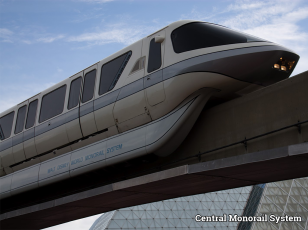
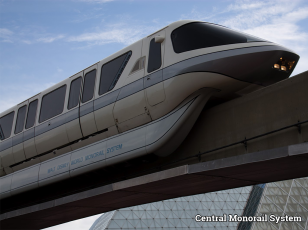
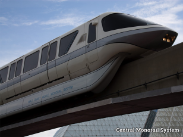

Precedent Images


 


For this assignment, we were expected to create a solution based on issues that came from our analysis in the previous assignment. We were assigned to analysed G15 section of 2011/2016 Census, which provide us the data of the population based on education sector. The Census data-packs thoroughly assessed the population from primary school to tertiary education. However, we filtered the data and only analysed the numbers of tertiary studies attendees. From the previous task, it can be seen that: in New South Wales, most of the population attend Universities/College around Sydney.
From our analysis from previous assignment here, The University of New South Wales (UNSW) took the first place as the University which attended by most population, and University of Sydney being second and University of Technology Sydney (UTS) being the third. It was not very surprising, since those are the top universities in New South Wales. With the growing number of populations and incoming international students, the nearby suburbs could be overpopulated because students prefer to live near the campus area. That is one of the issue coming from the analysis, what could be the other issues? Is there any solution?
There are some issues related to the current situation on population spread based on educational preferences. One being mentioned earlier; another possible issue is that some students live very far from the campus. Taking trains or buses might be ideal at the moment, but traffic congestion might cause students to arrive late thus missing important notes in the class. From the filtered QGIS data and extruded map, we can see that the North and West part of Sydney are less populated. From the shift of colour, it clearly indicates that the population (students) growth are slow and more students are migrating to another school close to the city.
Another possible issue that is relevant is college students tend to get stressed very often, meaning they need to vent out by any sort of entertainment. Some students may prefer to socialise with their friends at a bar, others may prefer shopping, watching, or even playing at the arcade. Sydney CBD have lots of those, and those who lives near makes it a convenience. Every Friday Night, inner city is very crowded, and those entertainment spot attracts a lot of students. However, what about those who lives far from the city? They may feel a bit left out, and it is not a convenience.

For the issue, which is about the possibility of overpopulation in nearby suburbs, there is a solution. What we proposed is that we wanted some enclosed campus of a university/college that satisfy all compulsory needs of a student. We built these campuses far away from the city in order to balance the students’ distribution in New South Wales. West side of NSW is ideal as some of the suburbs have a slow growth of population. With these new campuses, it is expected that current students in the inner city and even newcomers are migrating to the new location.
These each new campus are consisting of a school, apartment, and entertainment centre. Both the school and apartment are connected to the entertainment centre. It is expected that the apartment building can accommodate thousands of students, complete it either studio or sharing room. The school is also providing decent facilities as what a normal campus provides such as lecture halls, gym hall, pools, etc. For the other building, it is full of cinemas, stores, markets, karaoke, and other entertainment area. Students do not have to travel far to buy weekly groceries anymore, or even just watching new movies at the cinema. Convenience is the top priority, and the students are guaranteed to enjoyed it.
Not forget to mention about the monorail system installed on each campus, this transportation helps the speeding process of students from inner city to migrate to the new campuses. The hub is located on top of the always crowded Central Station. The location of th ehub is ideal since most people starts their commute from this station, and current buses in the city stops at this station. Migrating process is easy by getting a bus to Central Station, and from it get to the Hub then reached the new campuses by the monorail train.



Website by I Nyoman Bagus Sudassana (z5095126)
Texts made by Rujian Chen (z5125352)